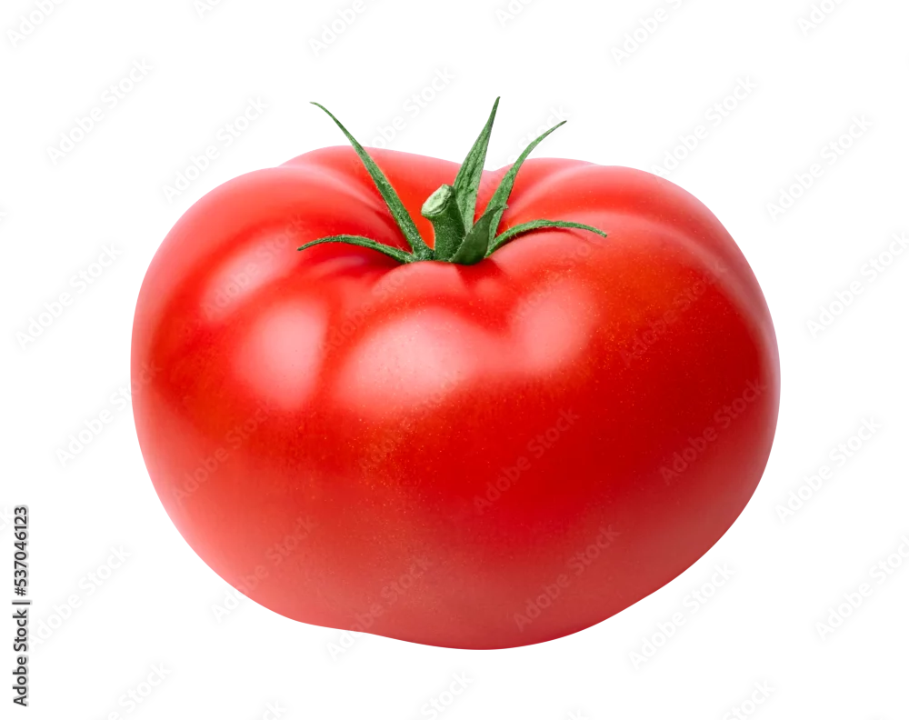
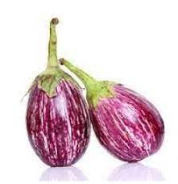

TOMATO
1KG=120RS
The tomato fruit is globular or ovoid. Botanically, the fruit exhibits all of the common characteristics of berries; a simple fleshy fruit that encloses its seed in the pulp.

BRINJAL
1KG=60RS
Brinjal (Solanum melongena), also known as eggplant or aubergine, is an easily cultivated plant belonging to the family Solanaceae. Its fruit is high in nutrition and commonly consumed as a vegetable.